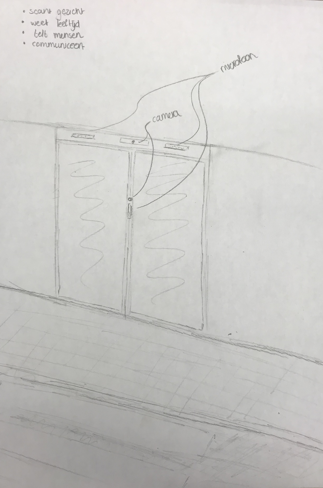

We kregen de opdracht om een Artificial Creature te ontwerpen. De naam zegt het al ‘Kunstmatige wezens’. Het onderwerp gaat vooral om emotie te geven aan een computer waardoor het lijkt alsof ze gevoelens hebben. Hierbij konden we kiezen uit verschillende onderwerpen, om hier een Artificial Creature van te maken. De onderwerpen waren: een fiets, een printer, een automatische schuif deur en een easy order van McDonald's. Ik heb gekozen voor de automatische schuifdeur. Tijdens het brainstormen dacht ik aan de problemen met een beveiliger aan de deur tijdens het uitgaan. Iedereen moet zijn ID laten zien, sommige zijn hun ID kwijt in hun tas, sommige zijn te jong maar gaan het toch proberen binnen te komen. Dit kost soms veel tijd. Maar er zijn ook momenten dat een beveiliger voor de deur staat niks te doen, tot er weer iemand binnen komt, terwijl zij binnen harder nodig zijn om te helpen bij problemen en ruzies tussen mensen. Hiervoor heb ik bedacht dat er geen beveiligers meer nodig zijn, maar inplaats daarvan een automatische schuifdeur die hetzelfde kan als een beveiliger aan de deur. De schuifdeur scant het gezicht van iemand, hierdoor weet het hoe oud de persoon is en of hij zij binnen mag komen. Ook wanneer de persoon niet binnen mag komen door conflicten of strafbladen laat de deur de persoon niet binnen. De deur weet hoeveel mensen er binnen zijn en hoeveel personen er dus nog naar binnen kunnen. Wanneer de persoon naar binnen mag of juist niet communiceert de deur dit door te praten. De bezoekers kunnen ook vragen stellen, zoals hoeveel mensen er nog naar binnen kunnen, tot hoe laat de club open is, of er een bepaalde vriend binnen is etc.
